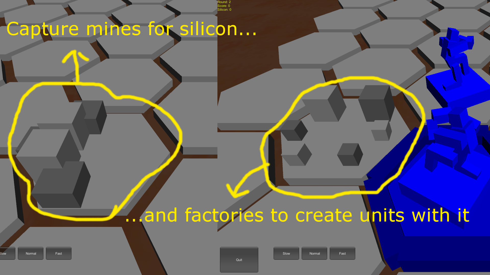

License of the Software:
This program is free software. It comes without any warranty, to the extent permitted by applicable law. You can redistribute it and/or modify it under the terms of the Do What The Fuck You Want To Public License, Version 2, as published by Sam Hocevar. See http://sam.zoy.org/wtfpl/COPYING for more details.Press the WASD Keys to move the camera and pan along the game field.
1. Camera Movement" />Scroll with the mouse wheel to zoom in and out.
Hover with the mouse cursor over the unit to view some stats.
Click on it to see a bit more and start issuing orders.
End the current round by pressing the end round on the upper right.
Protect it by all means!
These buildings give you ressources for each round while in your posession, or they allow you to create and deploy new units to the field.
Capture these buildings by moving any unit on it and using the capture order. Warning: The capture order costs all possible moves of your unit for the round.
The enemy is going to relentlessly attack you and trying to capture your buildings, ultimately resulting in a loss for you. Fight back by placing your unit within reach (1 hex), select attack, and then the enemy to attack. Your units can move and default attack in the same round, in any order.
You win the game by capturing the enemy main base. The enemy is going to try and create new units even if it has lost them all, so stay vigilant and go for the main base.
You lose, if the enemy manages to capture your base. Don't let him by covering your bases and by collecting ressources to replace lost units.